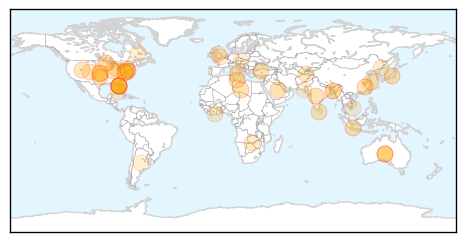
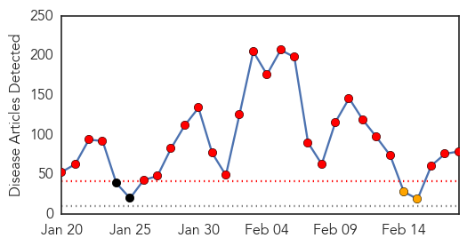
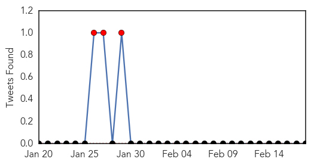

Unknown
30-Day Web Trend
0 alerts, 0 warnings

30-Day Twitter Trend
0 alerts, 0 warnings

Article Locations
Article Confidences

Top Articles:
- 0.989
- Cases of Typhoid Fever Reported in Oklahoma
- 0.985
- Scarlet fever warning issued to parents and schools in Sussex
- 0.917
- Chicago Tribune
- 0.917
- Chicago Tribune
- 0.917
- Chicago Tribune
- 0.917
- Chicago Tribune
- 0.917
- Chicago Tribune
- 0.917
- Chicago Tribune
- 0.917
- Chicago Tribune
- 0.917
- Chicago Tribune
- 0.917
- Chicago Tribune
- 0.917
- Chicago Tribune
- 0.917
- Chicago Tribune
- 0.917
- Chicago Tribune
- 0.917
- Chicago Tribune
- 0.917
- Chicago Tribune
- 0.917
- Chicago Tribune
- 0.917
- Chicago Tribune
- 0.891
- OK health officials confirm cases of typhoid fever
- 0.872
- New drug shields monkeys from AIDS infection – study
- 0.872
- New drug shields monkeys from infection — Study
- 0.868
- New drug a big leap in quest for HIV vaccine, study finds, Europe News & Top Stories
- 0.831
- 18.02.09 Tamil diaspora doctors prepared to enter Vanni, demand access
- 0.825
- AIDS: New drug shields monkeys from infection, study says
- 0.815
- Hutchinson Clinic to test new RSV vaccine
- 0.790
- Hospital MRSA prevention, control requires multitude of measures
- 0.740
- New drug shields monkeys from Aids, says study
- 0.736
- Study Ties Shingles Virus to Dangerous Blood Vessel Disease in Elderly
- 0.714
- Study Ties Shingles Virus to Dangerous Blood Vessel Disease in Elderly
- 0.701
- Tajikistan emphasizes safe food, drinking water, polio vaccination for better health
- 0.687
- Manpower shortage hits Sylhet hospital
- 0.679
- Assistant professors establish Health Disparities Research Collaborative
- 0.669
- Anger in Zimbabwe over ‘obscene’ Mugabe birthday bash
- 0.660
- Home ita
- 0.660
- Home ita
- 0.634
- 51 H7N9 human cases reported in Guangdong - Headlines, features, photo and videos from ecns.cn
- 0.619
- Fast-replicating HIV strains drive inflammation and disease progression
- 0.615
- Diarrhoea spate turns alarming in Lakshmipur, Comilla and Chandpur
- 0.591
- Travellers' antibiotics may do more harm than good
- 0.586
- Rare lung disease confirmed in 21 more Iron Range miners
- 0.586
- 21 more mesothelioma cases found in Minnesota Iron Range miners
- 0.575
- Americans May See Appeal of Medical Tourism in Cuba
- 0.563
- Rabies cyclical in Labrador wildlife, Hugh Whitney says
- 0.543
- HCM City a magnet for medical tourists
- 0.527
- Facts to know about danger of fluoride
- 0.523
- Lyssavirus bat infections: Spike in sick and dying bats sparks health concerns in Broome
- 0.519
- HIV vaccine tests showing very positive results, researchers say
- 0.514
- Minister orders improvement in healthcare of hospitals
- 0.511
- 9-valent HPV vaccine noninferior to quadrivalent HPV vaccine
Top Tweets:
- 0.796
- Decisión A; decisión B. Es bueno cambiar de vez en cuando.
- 0.739
- What health care workers can do to prevent Middle East respiratory syndrome infection MERS http://t.co/o1iCnlCf0c
- 0.619
- Los amo a todos. No importa nuestra diferencia en opiniones, compartimos una misma especie y un mismo tiempo. (Próximo tuit).
- 0.608
- Médicos cubanos curan a 260 enfermos de ébola en SierraLeona y logran frenar avance del virus http://t.co/ahgbOeIJrB
Measles
30-Day Web Trend
26 alerts, 2 warnings

30-Day Twitter Trend
5 alerts, 0 warnings

Article Locations

Article Confidences

Top Articles:
- 0.996
- Measles Cases Continue to Rise Across the United States
- 0.995
- State: Shippensburg, county so far free of measles
- 0.992
- Measles cases continue to rise in US
- 0.992
- Disney measles outbreak may have originated in the Philippines
- 0.990
- The Brookhaven Courier
- 0.989
- Health officials tracking down measles outbreak origin looking at Philippines, report says
- 0.983
- Area Wide News: Local News: Health Department urges public for measles vaccinations (02
- 0.982
- California Measles Outbreak Traced To Philippines Where Infections Top 57,000
- 0.982
- Spring break brings new risk for measles exposure
- 0.981
- Disneyland measles outbreak: Virus is identical to type found in Philippines
- 0.979
- Measles outbreak shows links to Philippines, analysis shows
- 0.978
- Health Officials Urge Measles Vaccine Before Spring Travel
- 0.976
- Health Ministry issues Measles alert
- 0.975
- More measles cases tied to Disneyland, Illinois day care
- 0.973
- How one person can set off a measles outbreak
- 0.973
- Coast Report Online : News
- 0.973
- DC Health Department Confirms Another Measles Case
- 0.970
- The Measles Virus that Hit Disneyland Last December 17 and 14 other Countries Has its Alleged Origin From the Philippines
- 0.965
- Measles make its way back into the United States
- 0.963
- No measles cases reported in area, but vaccinations still encouraged
- 0.960
- Hundreds of people may have been exposed to measles at Etobicoke Christian concert
- 0.959
- Niagara medical officer of health
- 0.956
- Anti-Vaccine Movements Not Just a U.S. Problem
- 0.956
- Villanova nursing professor advises parents on steps to take to prevent measles
- 0.955
- Oklahoma Health Officials Urge Measles Vaccinations
- 0.949
- Pointed Suggestion
- 0.948
- Measles cases on North Olympic Peninsula hold steady at two as officials await test results -- Port Angeles Port Townsend Sequim Forks Jefferson County Clallam County Olympic Peninsula Daily NEWS
- 0.943
- More measles cases tied to Disneyland, Illinois day care
- 0.934
- CDC: Update on Measles Cases in the U.S.
- 0.933
- Letter: Twinsburg medical expert recommends vaccinations - Twinsburg Bulletin
- 0.933
- Biggest rise in recent measles cases in illinois
- 0.933
- Health alert… How to prevent contracting measles, mumps and rubella
- 0.919
- California advises travelers to the Philippines to ensure they are vaccinated
- 0.919
- Disneyland Measles Outbreak Linked To Philippines
- 0.918
- Childhood vaccinations – Manitoulin Expositor
- 0.918
- Protect Against Measles before International Travel
- 0.917
- California health officials urge measles vaccine before spring travel
- 0.915
- Families count the cost of vaccine falsehoods
- 0.915
- The Vineyard Gazette - Martha's Vineyard News
- 0.901
- What Religions Have to Say about Immunization
- 0.888
- Second case of measles reported in 2015
- 0.877
- Halton Region measles case linked to others in GTA
- 0.864
- The War Over Vaccines: Terrorism's New Front
- 0.857
- Measles outbreak prompts Hill hearing on falling immunization rates
- 0.850
- Protect yourself from measles
- 0.842
- People need to catch on to vaccinations - Queen Anne & Magnolia News
- 0.841
- Dana Hills High School
- 0.834
- More US measles cases tied to Disneyland, Illinois day care
- 0.833
- Allegan County child quarantined until measles is ruled out
- 0.814
- California health officials urge measles vaccine before spring travel
Showing top 50 articles...
Top Tweets:
-
No tweets found for Feb 18, 2015